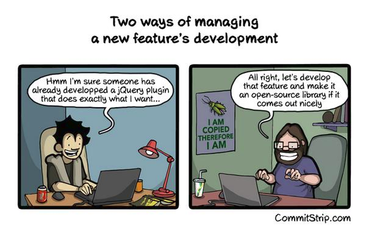
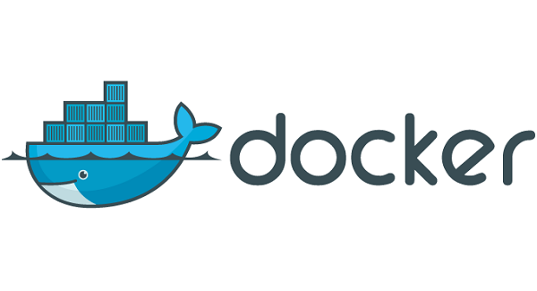

<!doctype html>
<html lang="en">

	<head>
		<meta charset="utf-8">

		<title>Göttliche Regeln - Build your PaaS with deis.io</title>

		<meta name="description" content="A framework for easily creating beautiful presentations using HTML">
		<meta name="author" content="Hakim El Hattab">

		<meta name="apple-mobile-web-app-capable" content="yes" />
		<meta name="apple-mobile-web-app-status-bar-style" content="black-translucent" />

		<meta name="viewport" content="width=device-width, initial-scale=1.0, maximum-scale=1.0, user-scalable=no, minimal-ui">

		<link rel="stylesheet" href="css/reveal.css">
		<link rel="stylesheet" href="css/theme/black.css" id="theme">
		<link rel="stylesheet" href="css/cc.css">

		<!-- Code syntax highlighting -->
		<link rel="stylesheet" href="lib/css/zenburn.css">

		<!-- Printing and PDF exports -->
		<script>
			var link = document.createElement( 'link' );
			link.rel = 'stylesheet';
			link.type = 'text/css';
			link.href = window.location.search.match( /print-pdf/gi ) ? 'css/print/pdf.css' : 'css/print/paper.css';
			document.getElementsByTagName( 'head' )[0].appendChild( link );
		</script>

		<!--[if lt IE 9]>
		<script src="lib/js/html5shiv.js"></script>
		<![endif]-->
	</head>

	<body>

		<div class="reveal">

			<!-- Any section element inside of this container is displayed as a slide -->
			<div class="slides">

<section data-markdown data-background="img/codecentric-title-background-16x9.png"><script type="text/template">
## Göttliche Regeln
## Build your PaaS with deis.io

Nicolas Byl, codecentric AG
</script></section>

<section>
	<section data-markdown data-background="img/bridge.png"><script type="text/template">
	</script></section>

	<section data-markdown><script type="text/template">
		
		<div class="image-source-link">http://dilbert.com/strip/2011-01-07</p>
	</script></section>

	<section data-markdown><script type="text/template">
		
		<div class="image-source-link">http://www.commitstrip.com/en/2014/09/30/two-ways-of-managing-a-new-features-development/</p>
	</script></section>
</section>

<section>
	<section data-markdown><script type="text/template">
	## Platform as a Service

	
	</script></section>
</section>

<section>
	<section data-markdown><script type="text/template">
	## Docker

	
	</script></section>

	<section data-markdown><script type="text/template">
	## Operations and Docker

	
	</script></section>

	<section data-markdown><script type="text/template">
	## Docker

	* Docker Container als Deliverable?
	* Compliance?
	* Application Lifecycle?
	</script></section>
</section>

<section>
	<section data-markdown><script type="text/template">
	## Twelve-Factor Applications

	
	</script></section>

	<section data-markdown><script type="text/template">
	* Codebase<span class="twelve-factor-explanation">One codebase tracked in revision control, many deploys</span>
	* Dependencies<span class="twelve-factor-explanation">Explicitly declare and isolate dependencies</span>
	* Config<span class="twelve-factor-explanation">Store config in the environment</span>
	* Backing Services<span class="twelve-factor-explanation">Treat backing services as attached resources</span>
	* Build, release, run<span class="twelve-factor-explanation">Strictly separate build and run stages</span>
	* Processes<span class="twelve-factor-explanation">Execute the app as one or more stateless processes</span>
	</script></section>

	<section data-markdown><script type="text/template">
	* Port binding<span class="twelve-factor-explanation">Export services via port binding</span>
	* Concurrency<span class="twelve-factor-explanation">Scale out via the process model</span>
	* Disposability<span class="twelve-factor-explanation">Maximize robustness with fast startup and graceful shutdown</span>
	* Dev/prod parity<span class="twelve-factor-explanation">Keep development, staging, and production as similar as possible</span>
	* Logs<span class="twelve-factor-explanation">Treat logs as event streams</span>
	* Admin processes<span class="twelve-factor-explanation">Run admin/management tasks as one-off processes</span>
	</script></section>
</section>

<section data-background="white">
	<section data-markdown><script type="text/template">
	

	
	
	
	</script></section>

	<section data-markdown><script type="text/template">
	## Deployments

	* Heroku Buildpacks
	* Dockerfile
	* Docker Images
	</script></section>

	<section data-markdown><script type="text/template">
	## Architektur

	
	</script></section>
</section>

<section data-markdown data-background="img/codecentric-green-background-16x9.png"><script type="text/template">
## Demo Time!
</script></section>

<section data-markdown><script type="text/template">
## Ausblick

* Kubernetes (TP)
* Mesos / Marathon (TP)
* Docker Swarm (TP)
* Upgrades
</script></section>

<section data-markdown data-background="img/codecentric-title-background-16x9.png"><script type="text/template">
# Danke für die Aufmerksamkeit

* http://deis.io
* http://github.com/nbyl/deis-workshop

## Fragen? Antworten!
* [nicolas.byl@codecentric.de](mailto:nicolas.byl@codecentric.de)
* [@NicolasByl](https://twitter.com/nicolasbyl)
</script></section>

			</div>
		</div>

		<script src="lib/js/head.min.js"></script>
		<script src="js/reveal.js"></script>

		<script>

			// Full list of configuration options available at:
			// https://github.com/hakimel/reveal.js#configuration
			Reveal.initialize({
				controls: true,
				progress: true,
				history: true,
				center: true,

				transition: 'slide', // none/fade/slide/convex/concave/zoom

				// Optional reveal.js plugins
				dependencies: [
					{ src: 'lib/js/classList.js', condition: function() { return !document.body.classList; } },
					{ src: 'plugin/markdown/marked.js', condition: function() { return !!document.querySelector( '[data-markdown]' ); } },
					{ src: 'plugin/markdown/markdown.js', condition: function() { return !!document.querySelector( '[data-markdown]' ); } },
					{ src: 'plugin/highlight/highlight.js', async: true, condition: function() { return !!document.querySelector( 'pre code' ); }, callback: function() { hljs.initHighlightingOnLoad(); } },
					{ src: 'plugin/zoom-js/zoom.js', async: true },
					{ src: 'plugin/notes/notes.js', async: true }
				]
			});

		</script>

	</body>
</html>
